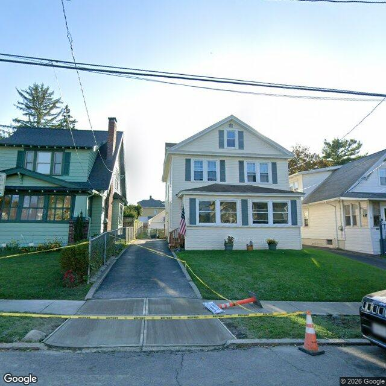

Property entry
253 Dale St
Published 2026-11-04T17:04:28+00:00
Parcel key: 005-03-130

City records
Matches use parcel IDs or normalized property addresses. Nearby properties are not treated as matches. Records may include historical or closed cases; check each record's status and dates. Publication dates are not source-data dates.
Vacant properties 0
No matches stored for this feed. The feed or address matching may be incomplete; this is not confirmation that no records exist.
Records refreshed 2026-11-04.
Rental registry 0
No matches stored for this feed. The feed or address matching may be incomplete; this is not confirmation that no records exist.
Records refreshed 2026-11-04.
Code violations 0
No matches stored for this feed. The feed or address matching may be incomplete; this is not confirmation that no records exist.
Records refreshed 2026-11-04.
Unfit properties 0
No matches stored for this feed. The feed or address matching may be incomplete; this is not confirmation that no records exist.
Records refreshed 2026-11-04.
AI image observations (unverified)
These observations are generated from an image, not an inspection or an official code finding. No human verification is recorded here.
Image capture date: Not recorded. The entry publication date does not establish the age of the image.
Automated image description
The visible exterior of the property appears to be a two-story residence with light-colored siding, a dark roof, and a well-maintained lawn, with some construction-related items present in the adjacent public right-of-way.
Property type guess: two_family
Visible conditions
- The main structure is a two-story building with a pitched roof.
- The exterior walls appear to be covered in light-colored siding, possibly vinyl or aluminum.
- The roof is dark-colored, likely asphalt shingles.
- Multiple windows are visible on both floors, many equipped with dark-colored shutters.
- A small front entry area is visible, displaying an American flag.
- The front yard consists of a maintained lawn with some foundation plantings and potted plants near the entry.
- A paved driveway runs along the left side of the property.
- Construction-related items, including caution tape, an orange cone, and a barricade, are visible in the public right-of-way directly in front of the property.
Condition scores
- Porch Or Entry
- good
- Roof
- good
- Siding Or Facade
- good
- Trash Debris
- none_visible
- Vegetation Overgrowth
- none_visible
- Windows Doors
- good
- Yard Or Lot
- good
Visible flags
- Active Construction Visible
- no
- Boarded Windows Or Doors
- no
- Fire Damage Visible
- no
- Structural Damage Visible
- no
- Vacancy Signs Visible
- no
Possible image-only flags
- No items reported.
AI review boxes
- No items reported.
Review reasons
- No items reported.
Image quality
- Available
- True
- Bytes
- 75223
- Needs Rerun
- False
['Construction-related items are present in the public right-of-way immediately adjacent to the property, which may indicate ongoing or recent public infrastructure work.']
ACS tract context
Census Tract 4; Onondaga County; New York
- Housing units
- 1534
- Median gross rent
- 130600
- Median household income
- 66250
- Poverty rate
- 27.6
- Renter-occupied share
- 71.7
- Total population
- 4042
- Vacancy rate
- 4.6
OpenStreetMap nearby
60 meter search radius
Nearby map data is temporarily unavailable. This does not mean there are no mapped features.